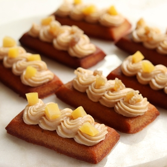
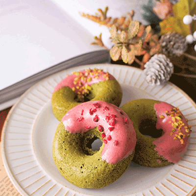
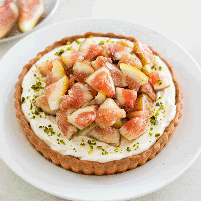

Pacific coffee HKBU
Black is back!
Tall $39, Grande $43 (Hot Only)
Promotion period is from now to 30 April 2024.
Click hereLearn More !
" 嚴選天然食材，精湛匠心烘培，
讓幸福在每口麵包中的香氣中蔓延 "
Pacific Coffee HKBU Waiting for u
享受花園庭院的悠閒時光，內用座位區美食相伴，
即日起來店消費加 LINE 好友可獲精緻小點心，等您一同品味！

栗子費南雪【無麩質】
在潮濕的米粉栗子金融家的頂部，添加了令人不可抗拒的奶油奶酪栗子奶酪奶油。同时用甜栗子和栗子糖裝飾，讓它看起來很漂亮！

【低糖/低熱量】抹茶甜甜圈
酥脆口感搭配奶油的濃郁香氣
口感濕潤，抹茶的甘味中和甜甜圈的甜味，口味健康，再加上紅桑子乾，酸甜的味道

無花果蜂蜜馬斯卡彭撻
基本的蛋撻麵團，上面是蜂蜜和馬斯卡彭的清爽奶油，還有很多新鮮的無花果！
天然養分健康首選